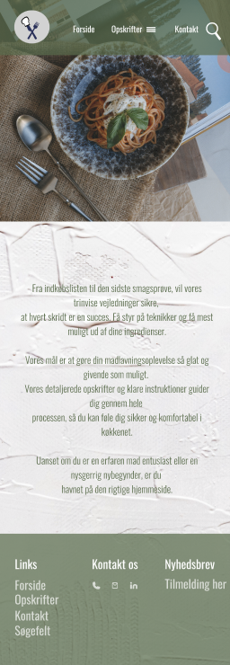
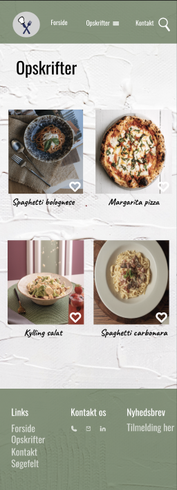
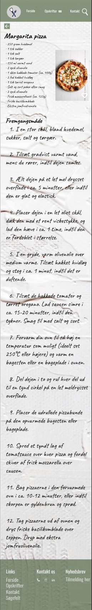

T E M A 3
GRUNDLÆGGENDE UX / UI
I tema 3 handlede det om at få en forståelse for hvordan designvalg og produktudvikling baseres på konkrete reelle brugere, og ikke udfra ens egen mavefornemmelse. Her fyldte teorier, værktøjer og metoder endel for at kunne skabe en research som senere førte til et design.
Mere informationLINK TIL HJEMMESIDE

MERE INFORMATION
KLIK HER FOR VIDEO PRÆSENTATION

PROTOTYPE - MOBIL SITE
LINK TIL FIGMA




